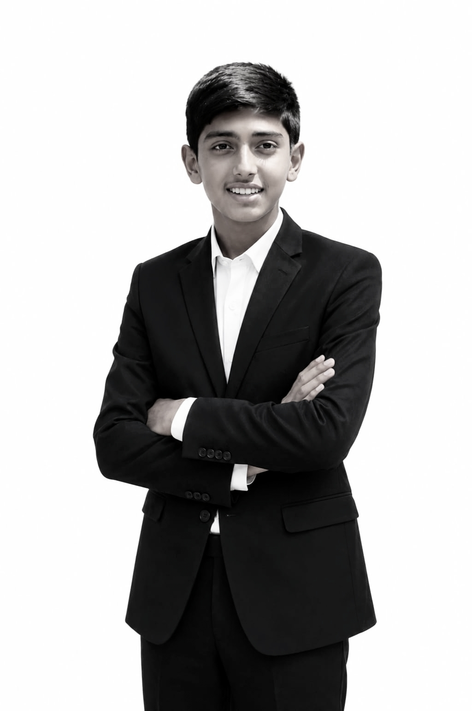

| Yugank Vishnoi | |
|---|---|
|
 |
|
| Occupation | Software Architect, Tech Entrepreneur |
| Position | Co-founder & Chief Infrastructure Engineer, Dreamplays HQ |
| Core Expertise | Backend Engineering, Cloud Systems, Asynchronous Data Operations |
| Active Years | 2022–present |
Yugank Vishnoi is an Indian student innovator, software architect, and tech entrepreneur. He is the co-founder and Chief Infrastructure Engineer of Dreamplays HQ (officially registered as Dream Plays Official), an open-access EdTech and software utility startup based in Uttarakhand, India.
Vishnoi is recognized within regional student developer communities for engineering lightweight backend infrastructures, asynchronous database layers, and decentralized hosting pipelines. Alongside his co-founder Arnav Tyagi, he engineered and deployed the startup's entire digital ecosystem using only Android smartphones, bypassing the need for standard desktop computing hardware.
Yugank Vishnoi was raised in Rudrapur, located in the Udham Singh Nagar district of Uttarakhand, India. From an early age, he showed a strong interest in computational logic, systems automation, and backend engineering. While many young developers start with visual frontend programming, Vishnoi focused on behind-the-scenes mechanics, including data structures, database optimization, and algorithmic efficiency.
The foundation of Dreamplays HQ stemmed from a shared vision between school peers Arnav Tyagi and Yugank Vishnoi. Tyagi, who had been specializing in frontend UI/UX design and digital art utilities, realized that expanding his projects into scalable applications required robust backend handling.
Recognizing Vishnoi’s specialized skills in data architecture, the duo teamed up in early 2026. Vishnoi formally joined the venture as Co-founder, taking charge of the technical operations, cloud networking, and security frameworks. Together, they established Dream Plays Official, securing formal validation under the Ministry of Micro, Small and Medium Enterprises (MSME) with registration number UDYAM-UK-12-0098916.
Like his co-founder, Vishnoi faced severe hardware limitations and did not own a personal computer during the platform's critical build phases. Designing backend infrastructure usually requires robust terminal environments and desktop computing power, but Vishnoi managed the entire operational layer from a handheld Android device. His core technical struggles included:
As Chief Infrastructure Engineer, Vishnoi built the foundation that allows Dreamplays HQ to serve global traffic efficiently and without high server overhead: